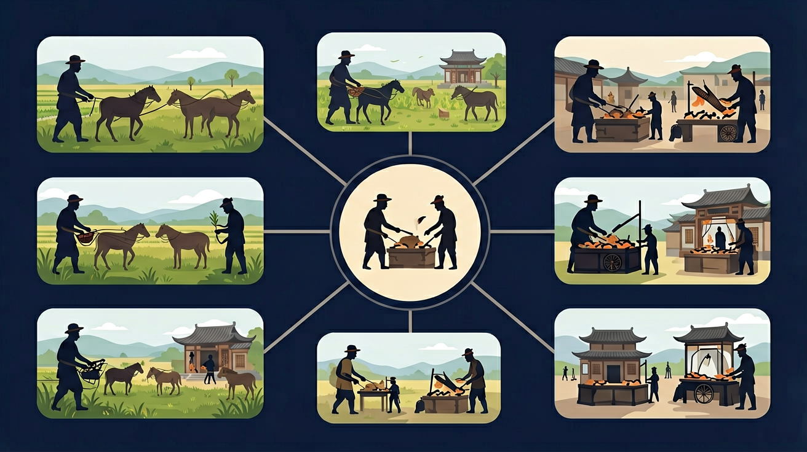

通过了解春秋战国时期的经济发展和政治变动，理解战国时期变法运动的必然性。

🎯 能说出古代农业'精耕细作'的三大技术特征
🎯 能判断不同朝代手工业发展的标志性成就
🎯 能分析'重农抑商'政策对商业发展的双重影响
❓ 为什么古代农民宁愿交高额地租也不自己开荒？
❓ 宋朝商业那么发达，为啥没出现现代银行？
❓ 课本说'重农抑商'，可为啥古代商人还是很有钱？
学完这一课，这些问题你都能自信地回答。
下列哪项是唐朝手工业发展的典型代表？
北宋'交子'最早出现在什么行业？
古代经济（农业/手工业/商业）是高中历史的重要内容。通过了解春秋战国时期的经济发展和政治变动，理解战国时期变法运动的必然性。
通过了解明清时期社会经济、思想文化的重要变化；通过了解明清时期封建专制的发展、世界的变化对中国的影响，认识中国社会面临的危机。
点击时代/图层按钮切换地图；悬停边界，点击城市标记查看说明。
古代经济以农耕为主，铁器牛耕、水利与土地制度影响深远；手工业官私并存，纺织、陶瓷、冶金成就突出；商业在宋以后市镇与交子等有突破，明清市镇繁荣，但重农抑商与海禁等政策也制约了新经济因素成长。
每一时期抓生产工具/技术、经营方式、政策态度。说明经济繁荣与政治统一、技术传播的关系，以及政策如何反作用于经济。
常见误区：常见误区是夸大某一朝“已进入资本主义社会”，脱离农耕主体的基本判断。
中国古代长期的主体经济形态是？
将经济史分解为土地制度、赋税政策、技术革新三个观察维度
用'生产力-生产关系'原理理解经济现象
对比汉唐租庸调制与明清一条鞭法的本质差异
从《清明上河图》观察北宋商品经济的繁荣细节
用古代漕运线路分析现代'南水北调'工程选址
复制提示词到 AI 学伴，生成「古代经济（农业/手工业/商业）」的时间轴或事件提纲；也可以上传你手绘的示意图，请 AI 学伴点评。
复制后可粘贴到 AI 学伴继续对话。
以下哪项最能体现汉代'重农抑商'政策
根据三类出土文物推断农业/手工业/商业的关系
关于古代经济（农业/手工业/商业）的学习，哪种做法最科学？
选一个并查看反馈。
先独立作答，再点选项查看对错与错因。
五铢钱上的'五铢'字样主要体现汉代
铁农具刻'河三'标记说明汉代
丝绸残片反映的经济现象是
汉代____制度规定盐铁等重要物资由官府专营
答案：盐铁官营
这是汉武帝加强中央集权的重要经济政策
长安城'东市''西市'的设立说明汉代____经济繁荣
答案：商业
固定交易场所是商业发展的标志
✅ 政策限制商人地位但未禁止交易，宋明清商业持续发展
💡 将政治打压与经济现实混为一谈
✅ 井田制属西周，均田制行于北魏至唐中期
💡 对土地制度演变时序记忆模糊
口诀：农本商末政策强，铁犁牛耕粮满仓，丝绸之路连中外，市舶司里贸易忙
类比：古代经济像人体：农业是骨骼，手工业是肌肉，商业是血液
（高考真题）明清时期，苏州出现'机户出资，机工出力'现象，实质反映了
（迁移题）当今'农村土地流转'与古代哪项制度最具可比性？
（概念题）下列哪组关键词最能概括古代中国经济特点？
点击节点跳转到对应章节；可切换布局。